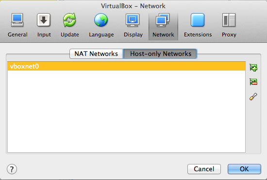
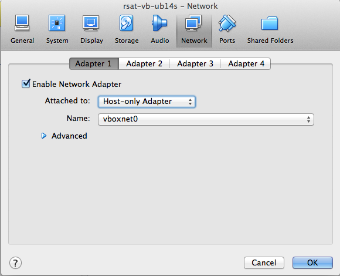
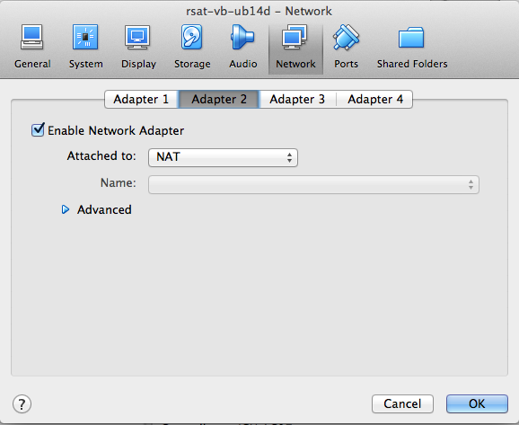
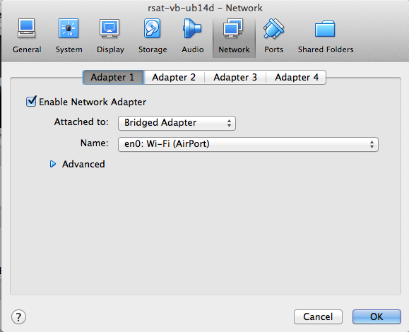
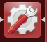

Regulatory Sequence Analysis Tools - Using RSAT-VM (Virtual Machine)
Contents
[back to contents]
Introduction
This tutorial explains how to install, configure and use a
Regulatory Sequence analysis Tool (RSAT) server installed on a
Virtual Machine (VM).
[back to contents]
Prerequisite
To run this tutorial, you first need to install the VirtualBox
application.
[back to contents]
Importing the Virtual Machine archive (ova file)
The RSAT virtual machine is distributed in two environments.
-
Ubuntu 14.04 desktop
This environment provides the flexibility of the graphical
user interface, but requires more disk space and can be more
demanding (memory, CPU) for the host computer.
-
Ubuntu 14.04 server
Lighter to install and run, but you can only use VM as Web
server, or log in via the Unix terminal (no graphical user
interface).
[back to contents]
Configuration
VirtualBox host-only adapter
- Open the VirtualBox program.
- Open VirtualBox Preferences.
Click on the Network option.
Click on the tab Host-only
Networks. Check if a host-only adapter is already
installed. If not, create a new one by clicking
the + icon on the right
side
(snapshot).

- Double-click on the host-only adapter to change its parameters.
- In the Adaptor tab, set the parameters as follows (snapshot).
- IPv4 Address: 192.168.56.1
- IPv4 Network Mask: 255.255.255.0
- IPv6 Address: (leave this field blank)
- IPv5 Nework Mask length: 0

- In the tab DHCP Server, set the parameters as follows (snapshot).
- Check the option Enable Server
- Server Address: 192.168.56.100
- Server mask: 255.255.255.0
- Lower Address Bound: 192.168.56.101
- Upper Address Bound: 192.168.56.154

Network settings for the guest machine
VirtualBox supports various ways to connect the guest (virtual
machine) to the network.
Host-only network
This solution offers a good tradeoff between security and
confort: your virtual machine (the guest) will be accessible only from
your computer (the host).
- In the panel showing the available virtual machines,
right-click on the RSAT-VM (rsat-vb-ub14d), open
the Settings ... dialog
box.
- In the tab Network,
select Adapter 1,
check Enable Network Adapter,
select Attached to: Host-only
Adapter (snapshot).
- In the pop-up menu besides the
option Name,
select vboxnet0.

NAT
Note: the host-only adapter will enable you to establish
a connection (Web browsing, ssh connection) from the hosting
operating system (the usual environment of your computer) to the
guest system (the virtual machine). however, this adapter does
not allow to connect the external world from the guest.
In parallel to the host-only adapter, we thus recommend to
enable the second adapter and
select NAT
(snapshot)..

Bridged network
Alternatively , for the sake of flexibility, you might consider
to use a bridged network. The bridged adapter is the most
convenient, because it establishes a bidirectional connection
between your VM (the guest) and the network. Your guest RSAT Web
server can thus be used from any other computer in your
network. This configuration can typically be usd to make an RSAT
server available for all people from the same lab or
institute.
Attention! The bridged network makes your virtual
machine visible for all the other computers of the local
network the host machine (your PC). Check with your system
administrator that this fits the local security
requirements.
- In the panel showing the available virtual machines,
right-click on the RSAT-VM (rsat-vb-ub14d), open
the Settings ... dialog
box.
- In the tab Network,
select Adapter 1,
check Enable Network Adapter,
select Attached to: Bridge
adapter.
- In the pop-up menu besides the
option Name, select an adapter
depending on your local network configuration,
e.g. Wi-fi (Airport) (snapshot).

[back to contents]
Running RSAT-VM
Starting the RSAT virtual machine
In the left panel
of VirtualBox, select the
virual machine (rsat-vb-ub14d), and click on
the Start icon.
At this stage, your RSAT VM should now be
ready to be used from the Web interface. Assuming that you
activated the host-only network as described abve, and
that you only started one virtual machine), VirtualBox
hould have assigned the first IP address of the range
defined in the settings above: 192.168.56.101.
Using RSAT-VM as Web server
-
Open a connection to http://192.168.56.101/
in your web browser.
If the link does not work, it probably means
that your network was not activated as described above. You
will then need to obtain the IP address of your
VM. Unfortunately, VirtualBox does not provide a direct way
to know which IP address has been assigned to a VM. The only
way we found to get this information is
to log in in the VM, open a
terminal, and run the
command /sbin/ifconfig.
RSAT-VM log-in
You can log with the following parameters:
- Username: vmuser
- Password: tochng
We intently chose an overly simple temporary
password to ensure compatibility with AZERTY as well as QUERTY
keyboards, but we recommend to use a safer password.
- At your first login, you will be prompted to change your
password before anything else.
- The user vmuser is sudoer. After login, you can thus
become the master of your Virtual Machine, create new users,
install packages, etc.
Chosing the adequate keyboard for your computer
A small difficulty when distributing a VM is the large variety
of keybords expected to be found on the users' computers. By
default, we selected the standard British QWERTY keyboard.
On Ubuntu 14.04 server version, keybord configuration can be
modified with following command.
sudo dpkg-reconfigure console-data
For the desktop version, click on
the Settings
icon , then on
the  , and check the
keyboard..
, and check the
keyboard..
Connecting RSAT-VM in ssh
ssh vmuser@192.168.56.101

 , and check the
keyboard.
, and check the
keyboard.{kind=link}
{kind=link}
{kind=link}
{kind=link}